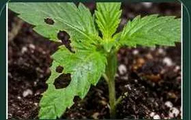
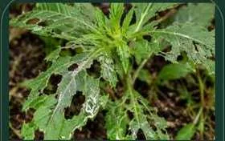
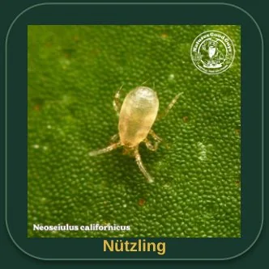
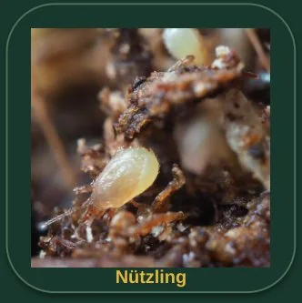
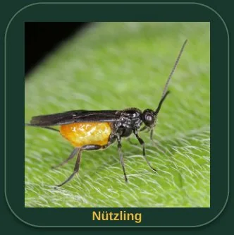
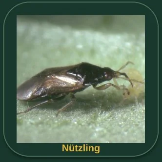
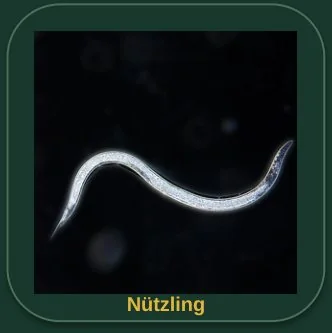
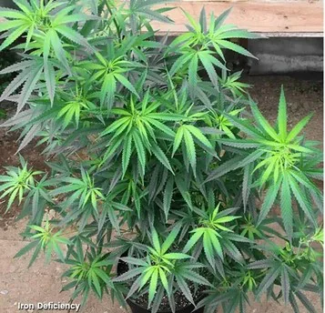
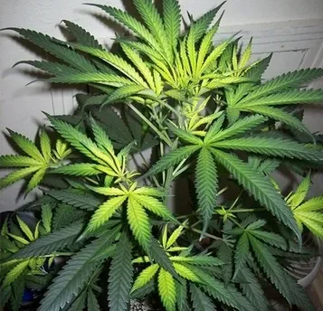
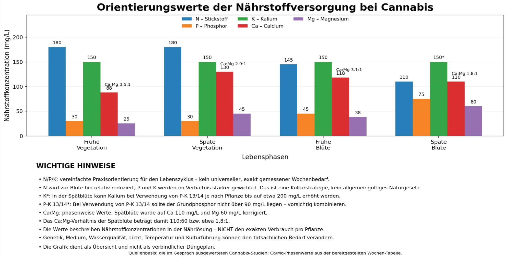

Schön, dass du da bist. Keimwerk bringt Pflanzenwissen, praktische Werkzeuge und Erfahrungen rund ums Growen an einem Ort zusammen.
Finde Antworten in unseren Lexika, berechne Nährstofflösungen mit dem Düngerrechner und halte Entwicklungen in deinem Grow-Tagebuch fest. Ob du gerade erst anfängst oder schon Erfahrung mitbringst: Hier kannst du Neues entdecken, Zusammenhänge verstehen und deinen nächsten Schritt besser planen.
Keimwerk ist noch in Entwicklung. Deshalb kann es vorkommen, dass einzelne Funktionen nicht wie erwartet arbeiten oder Fehler und Bugs auftreten. Wenn dir etwas auffällt, melde es bitte über unser . Dein Feedback hilft dabei, Keimwerk Schritt für Schritt zu verbessern.
KEIMWERK
Wissen, das Wurzeln schlägt.
DEIN ORT FÜR PFLANZENWISSEN
Wissen, das Wurzeln schlägt.
Ein Ort für alle, die Cannabispflanzen besser verstehen möchten. Keimwerk bündelt Informationen, erklärt Zusammenhänge und wächst Schritt für Schritt zu einer übersichtlichen Wissensplattform.
Wachsen. Entfalten. Ernten.
WISSEN ENTDECKEN
Unsere Lexika
Wähle einen Wissensbereich aus und entdecke hilfreiche Informationen, verständliche Erklärungen und übersichtliches Pflanzenwissen. Die verschiedenen Bereiche helfen dir dabei, Themen besser zu verstehen und Zusammenhänge zu erkennen.
❧
Schädlingslexikon
Hier findest du eine Übersicht zu Schädlingen an Pflanzen. Der Bereich soll helfen, mögliche Schädlinge anhand von Aussehen, Symptomen und typischen Schadbildern zu erkennen. Zu den Einträgen gehören Informationen zur visuellen Erkennung und Hinweise zur genaueren Kontrolle. Die Inhalte sind so gegliedert, dass du einzelne Profile später leicht finden und vergleichen kannst.
12 Schädlingsprofile
❧
Nützlingslexikon
Hier findest du Nützlinge, ihre Erkennungsmerkmale, ihre Wirkung und Hinweise zu ihrem Einsatz gegen Pflanzenschädlinge.
11 Nützlingsprofile
❧
Über- und Unterdüngungslexikon
Hier findest du typische Hinweise auf Nährstoffmängel und Überschüsse, anschauliche Pflanzenbilder sowie Hinweise zur Diagnose mit pH, EC und Wurzelzustand.
12 Nährstoffprofile
✿
Cannabis-Mängel-Finder
Symptome auswählen, mögliche Ursachen vergleichen und passende Informationen samt Originalbildern aus dem Nährstofflexikon anzeigen lassen.
Regelbasierte Orientierung
KEIMWERK KENNENLERNEN
Gut verwurzelt. Klar erklärt.
Keimwerk ist ein Wissensprojekt rund um Cannabispflanzen und ihre Pflege. Unser Ziel ist es, Beobachtungen verständlicher zu machen und Informationen in klar gegliederten Bereichen bereitzustellen.
⌕
Verständlich
Erkennungsmerkmale und Fachbegriffe in klarer Sprache.
◉
Übersichtlich
Wissen nach Themen geordnet und leicht auffindbar.
↗
Mit Sorgfalt
Neue Inhalte werden nach und nach ergänzt.
WISSEN ENTDECKEN
Schädlingslexikon
Informationen zu Erkennungsmerkmalen, Symptomen, Schäden und typischen Hinweisen zu Pflanzenschädlingen.
Aussehen: Mikroskopisch kleine, längliche, zigarrenförmige, blassgelbe bis rosa Milben an Trieben, Stängeln und Blattunterseiten.
Symptome: Feine Sprenkelung, bronzene bis rostige Verfärbungen, verformter junger Wuchs und nach oben gerollte Blattränder.
Schäden: Können Wachstum, Ertrag und Blütenqualität beeinträchtigen.
Praxis-Hinweis: Eine starke Lupe oder ein Mikroskop hilft bei der Kontrolle.
Breitmilben
Polyphagotarsonemus latus
Schädling / EiFrüher BefallSpäter Befall · stark verformter Wuchs
Aussehen: Etwa 0,25 mm große, ovale, gelblich-grüne Milben. Weibchen können einen hellen Streifen haben; sie sind schwer zu erkennen.
Symptome: Junge Blätter sind gekräuselt, gebogen, verdickt oder bronzefarben; Knospen können deformiert sein.
Schäden: Junger Wuchs wird gehemmt oder bleibt aus.
Praxis-Hinweis: Frischen Wuchs und Knospen kontrollieren; eine Lupe mit etwa 20-facher Vergrößerung oder ein Mikroskop kann helfen.
Schnecken / Schnegel
Gastropoda
Schädling

Früher Befall · erste Fraßspuren

Später Befall · viele Fraßlöcher
Aussehen: Weiche, häufig braune oder graue Tiere. Nacktschnecken und Schnegel sind oft nachts aktiv.
Symptome: Unregelmäßige ausgefranste Löcher, Fraß an Blatträndern und glänzende Schleimspuren.
Schäden: Besonders bei Sämlingen kann in kurzer Zeit viel Blattfläche verloren gehen.
Praxis-Hinweis: Abends, früh morgens oder nach Regen sowie unter Töpfen, Brettern und Mulch kontrollieren.
Dickmaulrüssler
Otiorhynchus sulcatus
SchädlingFrüher Befall · Fraßbuchten an BlätternSpäter Befall · Larven und Wurzelschaden
Aussehen: Dunkler, flugunfähiger Käfer; Larven sind weißlich, beinlos und haben einen braunen Kopf.
Symptome: Halbkreisförmige Fraßbuchten an Blatträndern. Wurzelschäden können zusätzlich Welken und schwaches Wachstum verursachen.
Schäden: Erwachsene Käfer fressen Blätter, Larven schädigen Wurzeln. Junge Pflanzen sind besonders gefährdet.
Praxis-Hinweis: Blattränder nachts kontrollieren; bei Welken Wurzeln und Wurzelballen prüfen.
WISSEN ENTDECKEN
Nützlingslexikon
Erkennungsmerkmale, Wirkung und praktische Hinweise zu Nützlingen und ihrem Einsatz.
11 Nützlingsprofile
Raubmilbe gegen Spinnmilben
Phytoseiulus persimilis
Spezialisierter Jäger von Spinnmilben.
Aussehen: Etwa 0,5 mm groß, birnenförmig und meist orange bis rot. Bewegt sich deutlich schneller als viele Pflanzmilben.
Wirkung: Frisst Spinnmilben, vor allem Eier und junge Stadien.
Praxis-Hinweis: Nicht ohne Beute ausbringen: Ohne Spinnmilben wandert sie häufig ab. Geeignete Wärme und Luftfeuchte fördern die Wirkung.
Raubmilbe für robustere Bedingungen
Neoseiulus californicus
Spinnmilben-Gegenspieler mit höherer Toleranz gegenüber Wärme und trockeneren Bedingungen.

Aussehen: Sehr kleine, hellgelbliche bis orangefarbene Raubmilbe; mit bloßem Auge kaum sicher zu erkennen.
Wirkung: Frisst verschiedene Spinnmilben-Arten; je nach Situation auch andere Milben, Thripse oder Pollen.
Praxis-Hinweis: Interessant bei wärmeren oder etwas trockeneren Bedingungen und niedrigerer Spinnmilben-Dichte.
Raubmilbe gegen Thripse & Weiße Fliegen
Amblyseius swirskii
Generalistische Raubmilbe, besonders interessant bei Thrips- und Weiße-Fliegen-Druck.
Aussehen: Winzige, blassgelbliche Raubmilbe; unter Vergrößerung besser erkennbar.
Wirkung: Frisst vor allem junge Thripse sowie Eier und Larven der Weißen Fliege. Pollen kann die Population stützen.
Praxis-Hinweis: Für vorbeugende und frühzeitige biologische Kontrolle interessant. Wirkung hängt von Temperatur und Beutedruck ab.
Boden-Raubmilbe
Stratiolaelaps scimitus / Hypoaspis miles
Bodenbewohnende Raubmilbe gegen Trauermückenlarven und Thrips-Puppen.

Aussehen: Sehr kleine, helle bis bräunliche Raubmilbe im Boden und an der Substratoberfläche.
Wirkung: Frisst Eier, Larven und Puppen von Trauermücken sowie Thrips-Puppen und weitere kleine Bodenorganismen.
Praxis-Hinweis: Besonders als vorbeugender Boden-Nützling interessant. Gleichmäßig ins Substrat einbringen.
Florfliege
Chrysoperla carnea
Vor allem die Larven sind aktive Räuber von Blattläusen und weiteren weichhäutigen Schädlingen.
Aussehen: Die erwachsene Florfliege ist zartgrün und besitzt durchsichtige Flügel. Larven sind länglich und haben kräftige Greifkiefer.
Wirkung: Die Larven fressen Blattläuse, Thripse und andere kleine Beutetiere.
Praxis-Hinweis: Besonders bei Blattlausproblemen nützlich. Blühpflanzen mit Nektar und Pollen helfen erwachsenen Tieren.
Schlupfwespe gegen Blattläuse
Aphidius colemani
Winziger Parasitoid, dessen Larve sich in Blattläusen entwickelt.
Aussehen: Sehr kleine, schlanke Schlupfwespe mit dunklem Körper; Weibchen suchen Blattläuse aktiv ab.
Wirkung: Parasitierte Blattläuse sterben ab und werden rundlich, aufgebläht und hellbraun bis beige („Blattlaus-Mumien“).
Praxis-Hinweis: Besonders für frühe bis mittlere Blattlauspopulationen geeignet. Breite Pestizidwirkung vermeiden.
Schlupfwespe gegen Weiße Fliegen
Encarsia formosa
Wichtiger Parasitoid der Weißen Fliege, besonders im geschützten Anbau.

Aussehen: Etwa 0,5 mm klein; Weibchen mit dunkel gefärbtem Vorderkörper und gelblichem Hinterleib.
Wirkung: Parasitierte Nymphen der Gewächshaus-Weißen Fliege werden dunkel bis schwarz; bei Bemisia tabaci eher bräunlich.
Praxis-Hinweis: Am wirksamsten bei frühem bis mittlerem Befall. Blattunterseiten regelmäßig kontrollieren.
Raubwanze gegen Thripse
Orius laevigatus
Räuberische Blumenwanze, die Thripse in verschiedenen Entwicklungsstadien erbeutet.

Aussehen: Kleine schwarzbraune Wanze mit hellem Flügelmuster; auch die Nymphen sind räuberisch.
Wirkung: Erwachsene und Nymphen fressen Thripse. Pollen kann als Zusatznahrung dienen.
Praxis-Hinweis: Interessant bei Thripsdruck und in blühenden Beständen. Unter etwa 20 °C arbeitet die Art langsamer.
Nützliche Fadenwürmer
Steinernema feltiae (SF-Nematoden)
Mikroskopisch kleine Nematoden, die geeignete Schadinsekten im Boden parasitieren.

Aussehen: Mikroskopisch kleine, fadenförmige Fadenwürmer; nicht mit bloßem Auge sichtbar.
Wirkung: Werden vor allem gegen bodenlebende Larven eingesetzt, insbesondere Trauermückenlarven.
Praxis-Hinweis: Für die Anwendung müssen die Hinweise des jeweiligen Präparats und die Feuchtigkeitsbedingungen beachtet werden.
Marienkäfer
Coccinellidae
Nützliche Käfer, deren Larven und erwachsene Tiere je nach Art Blattläuse fressen können.
Aussehen: Runde Käfer mit harten Flügeldecken; die Larven sind länglich und sehen deutlich anders aus als die erwachsenen Tiere.
Wirkung: Blattläuse sind eine wichtige Beute vieler Marienkäferarten.
Praxis-Hinweis: Als allgemeine Nützlinge fördern; konkrete Wirksamkeit hängt von Art und Situation ab.
Schwebfliegen
Syrphidae
Nützliche Insekten; die Larven vieler Arten fressen Blattläuse.
Aussehen: Erwachsene Schwebfliegen erinnern oft an Wespen, können aber nicht stechen. Die Larven sind meist wurmförmig und ohne Beine.
Wirkung: Larven vieler Arten ernähren sich von Blattläusen; erwachsene Tiere nutzen Blüten als Nahrungsquelle.
Praxis-Hinweis: Blühpflanzen können erwachsene Schwebfliegen unterstützen. Die Wirkung ist artabhängig.
KEIMWERK · PFLANZENWISSEN
Cannabis-Mängel-Finder
Wähle sichtbare Symptome und Pflegebedingungen aus. Der Finder vergleicht die Angaben mit Regeln und verknüpft passende Ergebnisse mit den Originaleinträgen und Beispielbildern aus dem bestehenden Über- und Unterdüngungslexikon.
Wichtig: Die Ergebnisse sind Hinweise, keine sichere Diagnose. Ähnliche Symptome können durch Nährstoffversorgung, pH, EC/Salzstress, Wurzeln, Gießen, Licht, Schädlinge oder Krankheiten entstehen. Ändere nicht mehrere Dinge gleichzeitig.
1 · Symptome
Wähle mindestens ein sichtbares Symptom aus.
2 · Wo beginnt das Problem?
Das Bild wird zur Analyse an den Keimwerk-Diagnosedienst gesendet. Entferne vor dem Upload persönliche oder identifizierende Bildinhalte.
KI-Diagnose
Rückfragen
Deine Ergebnisse
Hinweis: Ein Beispielbild dient dem Vergleich, nicht als Beweis. Prüfe die Begleitumstände, bevor du Nährstoffe oder Mittel ergänzt.
WISSEN ENTDECKEN
Lexikon für Über- und Unterdüngung
Typische Anzeichen von Nährstoffmangel und -überschuss, anschauliche Pflanzenbilder und eine strukturierte Hilfe zur besseren Einordnung.
12 Nährstoffprofile
Inhaltsverzeichnis
Klicke auf einen Bereich, um direkt dorthin zu springen.
Welche Blätter sind betroffen – ältere oder jüngere? Beginnt der Schaden an Spitzen, Rändern oder zwischen den Blattadern?
2 · Wurzelraum prüfen
pH, EC beziehungsweise Salzbelastung, Feuchtigkeit, Drainage, Ausgangswasser und Wurzeln gemeinsam beurteilen.
3 · Gezielter handeln
Erst nach der Einordnung korrigieren. Nicht mehrere Düngerprodukte gleichzeitig auf Verdacht ergänzen.
Wichtig: Ein einzelnes Blattbild ist keine sichere Diagnose. pH-Probleme, Wurzelschäden, Wasserqualität, Schädlinge, Krankheiten oder Licht- und Hitzestress können ähnliche Symptome verursachen.
Stickstoff (N)
Makronährstoff
Stickstoffmangel zeigt sich häufig zuerst an älteren Blättern.
Mangelbild – Beispiel 1Mangelbild – Beispiel 2
Mangel / Unterversorgung
Chlorose beginnt oft an älteren Blättern; die Vergilbung breitet sich von den Spitzen nach innen aus. Bei starkem Mangel kann Blattfall auftreten und Wachstum sowie Ertrag können abnehmen.
Überschuss / Blockade
Sehr dunkelgrüne Blätter, viel weiche Blattmasse und üppiges Wachstum können auf zu viel Stickstoff hindeuten. Triebe können schwächer und bruchanfälliger werden; Ertrag oder Qualität können leiden.
Praxis-Hinweis
N-Mangel gezielt und schrittweise ausgleichen. Bei vermutetem Überschuss die Zufuhr stoppen oder reduzieren und die Salzbelastung prüfen.
Phosphor (P)
Makronährstoff
Dunkle oder violette Färbungen sind Hinweise, aber nicht eindeutig.
Mangelbild – Beispiel 1Mangelbild – Beispiel 2
Mangel / Unterversorgung
Blattstiele können purpurfarben sein; Blätter wirken mitunter bläulich-grün oder zeigen dunkel kupfer- bis violettfarbene Flecken. Wachstum kann langsam sein und die Blüte verzögert starten.
Überschuss / Blockade
Ein Phosphorüberschuss kann das Nährstoffgleichgewicht stören und die Aufnahme anderer Elemente beeinflussen. Ähnliche Erscheinungen wie bei Eisen- oder Zinkmangel sind möglich; hoher pH kann Phosphor ebenfalls schlechter verfügbar machen.
Praxis-Hinweis
Violettfärbung kann auch mit Temperatur, Genetik und Umweltbedingungen zusammenhängen. Nicht blind Phosphor nachdosieren; pH sowie Boden- oder Wasserwerte prüfen.
Kalium (K)
Makronährstoff
Blattrandbrand ist ein Hinweis, aber kein sicherer Nachweis für Kaliummangel.
Mangelbild – Beispiel 1Mangelbild – Beispiel 2
Mangel / Unterversorgung
Blattspitzen können rostig-braun und trocken werden; Blattränder bräunen und rollen sich teils auf. Rostfarbene Flecken und schwächere Triebe sind ebenfalls möglich.
Überschuss / Blockade
Kaliumüberschuss ist visuell schwer von anderen Ungleichgewichten zu unterscheiden. Zu viel Kalium kann die Aufnahme von Calcium, Magnesium, Zink und Eisen behindern. Eine hohe Salzbelastung kann die Aufnahme zusätzlich stören.
Praxis-Hinweis
Kalium nur bei bestätigtem Bedarf ergänzen. Bei Verdacht auf Überschuss die Düngung reduzieren und die Salz- und Nährstoffbalance prüfen.
Calcium (Ca)
Sekundärer Makronährstoff
Calciumprobleme betreffen häufig das junge Wachstum und die Wurzelspitzen.
Mangelbild – Beispiel 1Mangelbild – Beispiel 2
Mangel / Unterversorgung
Blätter können verdreht oder gekräuselt sein. Unregelmäßige gelb-braune Flecken sind möglich; Wurzelspitzen können absterben.
Überschuss / Blockade
Ein Calciumüberschuss kann die Aufnahme oder Balance von Kalium, Eisen, Magnesium, Mangan und Phosphor beeinflussen.
Praxis-Hinweis
Nicht automatisch CalMag ergänzen, nur weil Blätter gelb werden. Erst prüfen, welches Element tatsächlich fehlt und ob pH oder Wurzeln die Aufnahme stören.
Magnesium (Mg)
Sekundärer Makronährstoff
Magnesiummangel zeigt sich oft an älteren Blättern zwischen den Blattadern.
Mangelbild – Beispiel 1Mangelbild – Beispiel 2
Mangel / Unterversorgung
Typisch ist eine interveinale Chlorose: Die Bereiche zwischen den Blattadern hellen auf, während Adern zunächst grüner bleiben. Rostbraune Flecken können an Rändern oder zwischen Adern auftreten.
Überschuss / Blockade
Zu viel Kalium oder Calcium kann die Magnesiumaufnahme beeinträchtigen. Ein Magnesiumüberschuss ist seltener, kann aber die Calciumversorgung aus dem Gleichgewicht bringen.
Praxis-Hinweis
Die Position der Symptome und den Dünger- sowie Wasserverlauf gemeinsam bewerten. Magnesium nicht allein anhand gelber Blätter diagnostizieren.
Bor (B)
Mikronährstoff
Bor ist in kleinen Mengen nötig; der Bereich zwischen ausreichender Versorgung und Überschuss ist eng.
Mangelbild – Beispiel 1Mangelbild – Beispiel 2
Mangel / Unterversorgung
Junges Wachstum kann verzerrt oder gestaucht wirken. Spitzen können verbrannt aussehen und junge Blätter geschädigt sein.
Überschuss / Blockade
Bei Überschuss können Blattränder vergilben und Nekrosen entstehen. Zwischen ausreichender und zu hoher Versorgung liegt eine vergleichsweise kleine Sicherheitsmarge.
Praxis-Hinweis
Bor nicht auf Verdacht hoch dosieren. Erst die Ursache prüfen und bei Unsicherheit Wasser-, Substrat- oder Blattwerte untersuchen.
Eisen (Fe)
Mikronährstoff
Eisenmangel betrifft häufig zuerst sehr junge Blätter.

Mangelbild – Beispiel 1

Mangelbild – Beispiel 2
Mangel / Unterversorgung
Sehr junge Blätter können zwischen den Blattadern deutlich heller werden, während die Adern länger grün bleiben (interveinale Chlorose). Ein zu hoher pH-Wert kann Eisen blockieren.
Überschuss / Blockade
Ein Eisenüberschuss kann mit bronzefarbenen Bereichen und dunklen Flecken einhergehen.
Praxis-Hinweis
Bei einem Mangelbild trotz Düngung zuerst pH-Wert und Wurzelzustand prüfen, statt automatisch mehr Dünger zuzugeben.
Mangan (Mn)
Mikronährstoff
Manganmangel kann Eisenmangel ähneln und ist deshalb schwer allein am Blatt zu erkennen.
Mangelbild – Beispiel 1Mangelbild – Beispiel 2
Mangel / Unterversorgung
Jüngere Blätter können zwischen den Adern aufhellen; später können kleine nekrotische Punkte entstehen. Ein hoher pH-Wert kann die Verfügbarkeit senken.
Überschuss / Blockade
Auch ein Manganüberschuss kann schädlich sein; das Blattbild allein reicht nicht zur sicheren Unterscheidung.
Praxis-Hinweis
pH, EC und Wurzelzustand mitprüfen und Mangan nicht ohne Bestätigung dosieren.
Molybdän (Mo)
Mikronährstoff
Molybdänmangel ist selten und kann wie ein Stickstoffproblem aussehen.
Mangelbild – Beispiel 1Mangelbild – Beispiel 2
Mangel / Unterversorgung
Stickstoffähnliche Chlorosen können auftreten. Blätter können sich außerdem verformen oder einrollen.
Überschuss / Blockade
Ein Überschuss ist selten. Bei Verdacht sollte eine Wasser-, Substrat- oder Blattprobe geprüft werden.
Praxis-Hinweis
Ähnliche Chlorosen können andere Ursachen haben. Nicht allein vom Aussehen auf Molybdänmangel schließen.
Schwefel (S)
Sekundärer Nährstoff
Schwefelmangel kann optisch einem Stickstoffproblem ähneln.
Mangelbild – Beispiel 1Mangelbild – Beispiel 2
Mangel / Unterversorgung
Aufhellung oder Chlorose und gehemmtes Wachstum können auftreten. Die Symptome beginnen häufig an oberen beziehungsweise jüngeren Blatttrieben.
Überschuss / Blockade
Ein Schwefelüberschuss gilt als selten. Bei Verdacht soll die Gesamt-Salz- und Nährstoffbalance geprüft werden.
Praxis-Hinweis
Auf das Alter der betroffenen Blätter achten und Schwefelprobleme nicht nur anhand der Blattfarbe bestimmen.
Zink (Zn)
Mikronährstoff
Zinkmangel kann mit Chlorose und gestauchtem Wachstum einhergehen.
Mangelbild – Beispiel 1Mangelbild – Beispiel 2
Mangel / Unterversorgung
Interveinale Chlorose sowie verkürzte Internodien und gestauchtes Wachstum sind mögliche Hinweise.
Überschuss / Blockade
Hohe Zinkgehalte können das Wurzelwachstum mindern und die Eisenaufnahme stören.
Praxis-Hinweis
Bei Verdacht pH, EC und Wasser- beziehungsweise Substratwerte gemeinsam prüfen; Zink nicht auf Verdacht dosieren.
Kupfer (Cu)
Mikronährstoff
Kupfer ist essenziell, kann bei Überdosierung jedoch problematisch sein.
Für diesen Nährstoff liegt kein eigenes Bildbeispiel vor.
Mangel / Unterversorgung
Junge Blätter können chlorotisch werden; Wachstum kann gestört oder gehemmt sein.
Überschuss / Blockade
Kupfer kann toxisch wirken, besonders in saurem Medium.
Praxis-Hinweis
Für Kupfer liegt kein eigenes Pflanzen-Fotobeispiel vor. Bei Verdacht nicht auf Verdacht düngen; Medium und Wasserqualität mitprüfen.
GRUNDLAGEN & DIAGNOSE
Über- und Unterdüngung verstehen
Ähnliche Blattsymptome können unterschiedliche Ursachen haben. Entscheidend ist, Muster, Wurzelraum und Versorgung gemeinsam zu beurteilen.
Unterdüngung
Ein Nährstoff ist tatsächlich zu wenig vorhanden, wurde ausgewaschen oder wird nicht ausreichend aufgenommen.
Zu geringe Düngerkonzentration oder Versorgung
Nährstoffverlust durch Auswaschung
Ein ungeeigneter pH-Wert kann die Verfügbarkeit einschränken
Geschädigte Wurzeln können die Aufnahme behindern
Bei mobilen Nährstoffen beginnen Symptome häufig an älteren Blättern.
Überdüngung
Zu viele gelöste Salze oder einzelne Nährstoffe belasten die Pflanze. Überschüsse können außerdem die Aufnahme anderer Elemente stören.
Zu häufige oder zu konzentrierte Düngung
Hohe Gesamtsalzkonzentration im Wurzelraum
Gestörte Wasseraufnahme durch Salzstress
Ungleichgewichte zwischen einzelnen Nährstoffen
Verbrannte Spitzen und Blattränder sowie gehemmtes Wachstum können Hinweise sein.
Erst prüfen, dann handeln
Eine Blattfarbe allein ist kein sicherer Nachweis für einen bestimmten Nährstoffmangel.
1 · Pflanze anschauen
Welche Blätter sind betroffen: ältere oder jüngere?
Beginnt der Schaden an Spitzen, Rändern oder zwischen den Adern?
Sind Wuchs, Blattform oder Triebe verändert?
Sind Schädlinge oder Krankheitszeichen sichtbar?
2 · Wurzelraum prüfen
pH-Wert messen
EC beziehungsweise Salzbelastung kontrollieren
Feuchtigkeit und Drainage beurteilen
Wurzeln und Ausgangswasser prüfen
3 · Gezielt handeln
Bei bestätigtem Mangel den fehlenden Nährstoff gezielt ergänzen
Bei bestätigtem Überschuss Zufuhr reduzieren oder pausieren
Nicht mehrere Produkte gleichzeitig auf Verdacht zugeben
Reaktion am neuen Wachstum beobachten
Andere mögliche Ursachen: Überwässerung, Sauerstoffmangel im Wurzelraum, Wurzelschäden, Schädlinge, Krankheiten, Licht- oder Hitzestress und pH-Probleme können ähnliche Symptome auslösen.
pH und Nährstoffverfügbarkeit
Nährstoffe können im Medium vorhanden sein und trotzdem schlecht aufgenommen werden. Das wird häufig als Nährstoffblockade oder „Lockout“ bezeichnet.
Orientierungsbereiche
Erde / Boden: Für Hanf wird häufig ein pH-Bereich von etwa 6,0–7,0 als Orientierung genannt.
Soilless / Hydro: Viele Systeme arbeiten ungefähr im Bereich 5,5–6,5.
Der passende Bereich hängt vom Medium und dem verwendeten Anbausystem ab. Außerhalb des geeigneten Bereichs können einzelne Elemente schlechter verfügbar oder zu stark löslich sein.
Hinweise auf eine Blockade
Mangelähnliche Symptome trotz vorhandener Düngung
pH-Wert liegt dauerhaft außerhalb des passenden Bereichs
Symptome treten auf, ohne dass die Düngung verändert wurde
Blattbild und bisherige Nährstoffzufuhr passen nicht zusammen
Nicht automatisch mehr Dünger geben: zuerst pH, EC und Wurzelzustand prüfen.
EC und Salzstress
Der EC-Wert beschreibt die elektrische Leitfähigkeit der Lösung und dient als Hinweis auf die Menge gelöster Ionen. Er verrät nicht, welcher einzelne Nährstoff zu hoch ist.
Mögliche Anzeichen
Braune oder verbrannte Blattspitzen
Nekrotische Blattränder
Stockendes Wachstum
Welke Blätter trotz feuchtem Substrat
Mitunter weiße Salzkrusten
Werte richtig einordnen
Ein hoher EC kann auf eine hohe Salzbelastung hindeuten
Ein niedriger EC kann mit Unterversorgung zusammenhängen
Wasserqualität beeinflusst den EC mit
Messungen möglichst im passenden Medium und unter vergleichbaren Bedingungen durchführen
Bei Verdacht auf Salzstress: Düngung zunächst pausieren oder reduzieren, Ursache messen und nur bei plausibel bestätigter Salzbelastung gezielt auswaschen beziehungsweise eine Nährlösung wechseln. Nicht allein wegen eines gelben Blattes pauschal spülen.
Die Nährstoffe im Überblick
Die folgenden Muster sind Hinweise, keine alleinstehenden Diagnosen.
Beobachtung
Eher möglicher Mangel
Eher Überschuss / Salzstress
Zusätzlich prüfen
Vergilbung älterer Blätter
Stickstoff, Magnesium, eventuell Kalium
Für sich nicht typisch
pH und Wurzeln
Aufhellung jungen Wachstums
Eisen, Mangan
Für sich nicht typisch
pH; mögliche Aufnahmeblockade
Verbrannte Blattspitzen
Manchmal Kalium
Häufig Salzstress möglich
EC und Düngungsverlauf
Sehr dunkelgrüne, üppige Pflanze
Nicht typisch
Stickstoffüberschuss möglich
Wachstum und Düngermenge
Violette oder dunkle Färbung
Phosphor möglich
Überschuss kann indirekt das Gleichgewicht stören
Temperatur, Genetik, Umwelt und pH
Diagnose in sieben Schritten
Symptom möglichst genau beschreiben.
Prüfen, ob ältere oder jüngere Blätter zuerst betroffen sind.
Schädlinge und Krankheiten als Ursache ausschließen.
pH-Wert messen.
EC beziehungsweise Salzbelastung prüfen.
Wasser und Substrat prüfen; bei Unsicherheit geeignete Analyse erwägen.
Gezielt behandeln und den Verlauf dokumentieren.
Behandlung bei Unterdüngung
Ziel ist, den tatsächlichen Engpass zu korrigieren – nicht alle Nährstoffe gleichzeitig zu erhöhen.
Schritt für Schritt
Prüfen, ob ein Mangel wahrscheinlich und ausreichend bestätigt ist.
pH-Wert in den für das Medium passenden Bereich bringen.
Den tatsächlich fehlenden Nährstoff gezielt ergänzen.
Mit moderater Menge beginnen statt maximal zu dosieren.
Neue Blätter und Wachstum beobachten.
Nur bei Bedarf nachjustieren.
Vermeiden
„Mehr Dünger bedeutet schneller gesund“
Mehrere Produkte gleichzeitig zugeben
CalMag ohne bestätigten Bedarf nachdosieren
Den pH-Wert ständig stark hin- und herverändern
Stark geschädigte alte Blätter als einziges Erfolgskriterium nehmen
Erfolgskontrolle: Bereits stark geschädigte Blätter werden häufig nicht wieder normal. Neue Blätter und neues Wachstum sind meist aussagekräftiger.
Behandlung bei Überdüngung oder Salzstress
Erde / Substrat
Düngung zunächst pausieren oder reduzieren
pH und EC prüfen
Nur bei bestätigter Salzbelastung gezielt mit geeignetem Wasser auswaschen
Für ausreichenden Ablauf und Drainage sorgen
Danach mit moderater Nährstoffstärke weiterarbeiten
Hydro / DWC
Nährlösung und Messwerte prüfen
Bei falscher Konzentration die Reservoir-Lösung wechseln
Wurzeln kontrollieren
pH und EC neu einstellen
Anschließend schrittweise zur normalen Versorgung zurückkehren
Unterschiede je nach Anbaumedium
Erde / Boden
Erde puffert den pH-Wert stärker. Ein Boden- oder Substrattest kann helfen. Bei bestätigter Salzbelastung kann gezieltes Spülen nötig sein.
Coco / Soilless
Diese Medien puffern weniger. pH und Salzgehalt enger überwachen und Wurzelzone sowie Gieß- und Drainwerte gemeinsam betrachten.
Hydro / DWC
Nährstoffe liegen direkt in Lösung vor. pH und EC regelmäßig kontrollieren; bei falscher Konzentration kann ein Wechsel der Nährlösung erforderlich sein.
Wichtig: Es gibt keinen universellen Spülwert und keine einzige Düngerdosis, die für alle Medien und Situationen passt.
Wo zeigt sich ein Mangel zuerst?
Die Beweglichkeit eines Nährstoffs beeinflusst, welche Blätter häufig zuerst betroffen sind.
Hoch mobil
Stickstoff, Phosphor, Kalium und Magnesium
Bei einem Mangel sind häufig zuerst ältere Blätter betroffen, weil die Pflanze mobile Nährstoffe umverteilen kann.
Geringer / mittlerer mobil
Calcium und Bor haben eine geringe Mobilität. Bei Eisen, Mangan, Zink, Kupfer und Molybdän kann die Verteilung der Symptome variieren.
Das Muster immer gemeinsam mit pH, EC und Wurzelzustand bewerten.
Immobil
Schwefel wird in der Pflanze nur begrenzt umverteilt. Symptome können deshalb anders verteilt sein als bei mobilen Nährstoffen.
Ausgangswasser und Wasserqualität
Leitungs- oder Quellwasser ist Teil der Nährstoffversorgung und sollte mitgerechnet werden.
Was steckt im Wasser?
EC / Leitfähigkeit
Calcium und Magnesium
Hydrogencarbonat beziehungsweise Alkalinität
Gegebenenfalls Natrium und Chlorid
Ausgangs-pH
Warum ist das wichtig?
Hartes Wasser liefert bereits Calcium und Magnesium
Hohe Alkalinität kann den pH stärker puffern
Zusätzliche CalMag-Gaben können unnötig sein
Salze im Ausgangswasser erhöhen den EC
Praktisches Vorgehen
Ausgangswasser analysieren
pH und EC des Wassers messen
Dünger und Zusätze darauf abstimmen
Bei anderer Wasserquelle neu prüfen
Weitere essenzielle Elemente
Kohlenstoff, Wasserstoff und Sauerstoff
Diese Elemente gehören zu den essenziellen Pflanzenelementen. Sie kommen überwiegend aus CO₂ und Wasser und werden nicht wie N-P-K über einen normalen Dünger zugeführt.
Chlor (Cl) und Nickel (Ni)
Beide sind essenziell, Mängel sind unter normalen Kulturbedingungen aber selten. Nicht auf Verdacht dosieren; bei ungewöhnlichen Symptomen zuerst pH, EC, Wasser, Wurzeln und häufigere Nährstoffe prüfen.
Silizium (Si)
Silizium kann in der Kulturpraxis interessant sein, gilt bei Cannabis aber nicht als klassischer essenzieller Nährstoff. Es sollte nicht wie ein bestätigter Mangel an N, P, K, Ca, Mg, S, Fe, Mn, B, Zn, Cu oder Mo behandelt werden.
30-Sekunden-Checkliste: Nicht sofort düngen → alte oder junge Blätter unterscheiden → Schädlinge und Krankheiten ausschließen → pH und EC messen → Wurzelraum und Wasser prüfen → gezielt behandeln → Reaktion am neuen Wachstum kontrollieren.
Orientierungswerte der Nährstoffversorgung
Nährstoffbedarf verändert sich mit der Wachstumsphase. Allgemeine Diagramme und Richtwerte sind jedoch keine universelle Bedarfskurve und sollten nicht als fester Düngeplan verwendet werden. Sorte, Medium, Wasserqualität, Licht, Temperatur und Kulturbedingungen beeinflussen den tatsächlichen Bedarf.

Fachinformationen zur Vertiefung: USU Extension – Hemp Nutrient Deficiencies und Growing Cannabis FAQs; UF/IFAS – Hemp Nutrient Management und Hemp Fertilization; UC IPM – Nutrient Deficiencies sowie Nutrient and Mineral Excesses / Salt Toxicity; Missouri Extension – Hydroponic Nutrient Solutions; Oregon State Extension – Environmental Factors Affecting Plant Growth; wissenschaftliche Fachartikel zu Nährstoffversorgung und Hydroponik bei Cannabis.
Grundlage: Grundlage: Informationen zu Diagnose, Nährstoffen und typischen Mangelbildern. Die Bildbeispiele dienen der Orientierung und zeigen keine gesicherten Überdüngungssymptome. Bildquelle: Dutch Passion, „Ein visueller Leitfaden für Cannabismangel“.
HINTER DEM NAMEN
Über Keimwerk
Keimwerk ist aus einer einfachen Idee entstanden: Pflanzenwissen soll nicht unnötig kompliziert sein.
Entscheidend ist, die Zusammenhänge hinter Beobachtungen zu verstehen.
Das Projekt soll Informationen nicht nur sammeln, sondern verständlich ordnen und dabei helfen, Wissen sinnvoll miteinander zu verbinden.
Unsere Überzeugung
Gutes Wissen wächst mit Geduld, Beobachtung und der Bereitschaft, genauer hinzuschauen.
Warum Keimwerk?
Ein Keim ist der Anfang von etwas, das sich entwickeln kann. Werk steht für die sorgfältige Arbeit, die in diesen Prozess fließt.
Wie wir das Projekt aufbauen
Wir entwickeln zuerst ein solides Fundament und ergänzen weitere Bereiche nach und nach. Jede Erweiterung soll einen klaren Zweck erfüllen.
Wofür wir stehen
Wir legen Wert auf Verständlichkeit, Übersicht und einen verantwortungsvollen Umgang mit Informationen.
WIR HELFEN WEITER
Kontakt & Fehler melden
Du hast einen Fehler entdeckt oder möchtest eine Verbesserung vorschlagen? Beschreibe kurz, worum es geht. So können wir Keimwerk Schritt für Schritt verbessern.
Grow-Profile
Speichere deine Anbau-Setups, lade sie später wieder und verwalte alle Profile an einem Ort. Die Daten bleiben in diesem Browser. Bestehende Profile bleiben kompatibel.
Gespeicherte Profile
0 Profile
Hinweis: Das Speichern aktualisiert nur Grow-Profile. Ein verknüpftes Tagebuchprojekt wird nicht nachträglich verändert.
DEINE PFLANZEN, DEIN VERLAUF
Grow-Tagebuch
Dokumentiere deine Grow-Projekte, Fotos, Beobachtungen und Messwerte. Die Daten bleiben in diesem Browser und können exportiert und später wieder importiert werden.